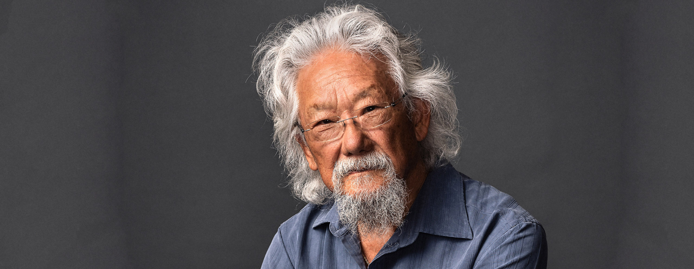

David Suzuki

David Suzuki is an environmental activist and genetical scientist. He is known for hosting and narrating the show "The Nature of Things." He co-founded the David Suzuki Foundation to "find ways for society to live in balance with the natural world that does sustain us."
Suzuki was born March 24, 1936 in Vancouver, British Columbia. He is the first child of Carr Kaoru Suzuki and Setsu Nakamura, and he is a twin with his sister Marcia. They have two other siblings, Aiko and Dawn. Suzuki also attended an internment camp with his mother and siblings for three years in Slocan City. Suzuki's grandparents immigrated to Canada at the beginning of the 20th century.
He recieved his Bachelor of Arts degree in biology from Amhert College in 1958. He recieved his Doctor of Philisophy degree in zoology from the University of Chicago in 1961. He is academically talented, also teaching in the genetics department for forty years.
Suzuki has founded and hosted various scientific shows. He has also written many book touching on various science subjects. He has made an extrordinary impact on science, especially genetical and environmental science.